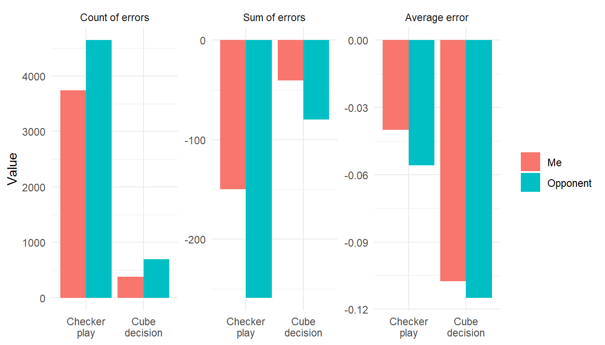
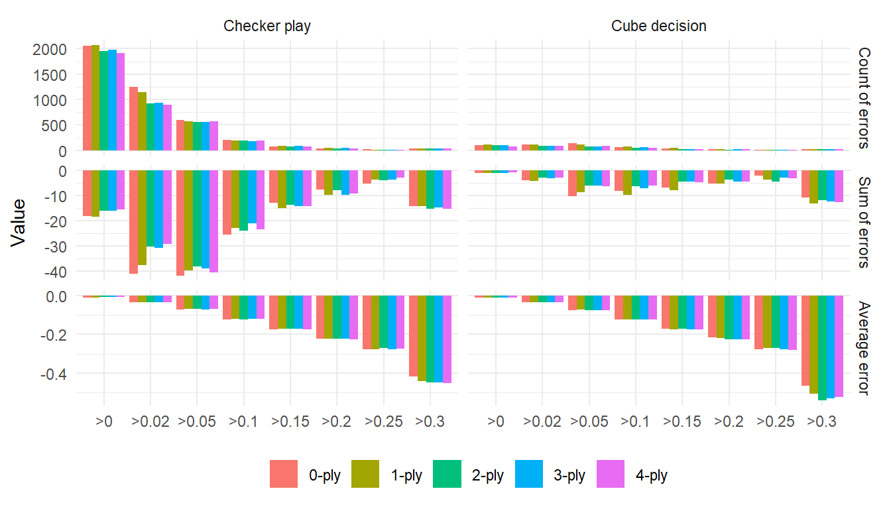
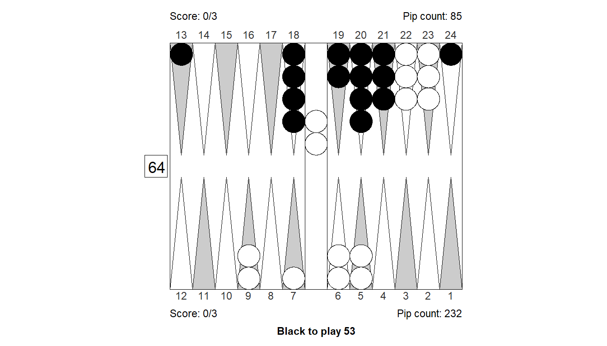
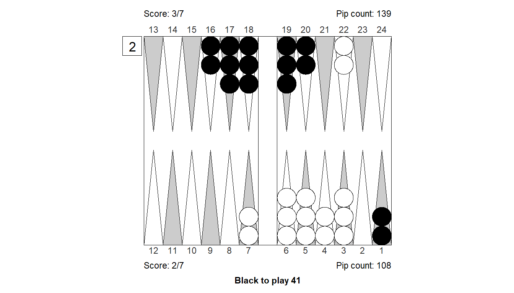

Mistake, errors and statistics
Why this?
This is an exploratory analysis of a big chunk of my backgammon matches played on Backgammon Galaxy. Maybe I can spot some interesting patterns, to help better focus my learning.
The data
Quick overview of the data I have collected:
In total, the data set contains 39690 positions. Some positions (like opening plays) appear several times; the total number of unique positions is 39261
The positions are taken from a total of 892 games, from a total of 343 matches.
The number of actual errors, the positions that we will consider here, are the decisions where someone (me or my opponent) made a checker play error or cube decision error. This comes to a total of 9460 mistakes, 4120 of which was made by me, 5340 by one of my 280 opponents.
All positions have been analyzed by GNU Backgammon 4-ply (equivalent to eXtreme Gammon 5-ply).
The data is available on GitHub, as a part of an R-package that I use as toolbox for backgammon related analyses.
Me vs The Galaxy
First, let’s just count, sum, and average all the errors, to see how they split by cube/checker play and by me/opponents. The left, middle, and right panel in the plot below shows counts, sums, and averages.
Luckily, it looks like I make fewer and smaller errors than my opponents on Backgammon Galaxy, but that is not surprising: I never use a rating filter, and therefore my opponents are of all skill levels, including beginners.
Note that the errors are not directly comparable to the performance rating, PR, that Galaxy reports. The averages shown are the average size of errors, not averages across all non-obvious plays like XG defines it.
Anyway, it does look like I have plenty of room for improvement. Can we figure out what areas to focus on?
For one thing, checker play errors taken together, seem to sum to a lot more than all cube errors. This is because there are so many checker play decisions, many of them resulting in small errors. The average cube error is more than double of the average checker play error.
Given that it would be hard to weed out all the checker plays that GNU BG considers small errors, it might be just as good to focus on the fewer but heavier cube errors.
Let’s split by size of the error made, to see just how much the many small errors account for, compared to the fewer biggies.
My errors by size
Is the total sum of errors mostly from many small errors, or a few big blunders?
The single interval of checker play errors, that contribute the most to the total cost of errors, is the medium-sized one, errors between 0.05 and 0.1. And about half the checker play errors could be eliminated if I didn’t make blunder at 0.1 and above. Presumably the biggest ones are the easiest to get rid of, so it makes sense to focus on blunders, as many players do.
Note that there’s a significant fat tail of blunders at 0.3 and above. Many of those may have to do with oversights, misclicks, time-pressure, losing interest, etc. So perhaps a low hanging fruit would be to just improve focus and concentration.
Similar for cube actions; there seem to be a good chunk of huge blunders that I should be able to get rid of. The small cube errors are maybe not worth worrying too much about. One reason is that in case of doubles, sometimes it pays to play the opponent: A incorrect double can be profitable if the opponent responds by an even bigger error. (More on incorrect takes/passes from opponents later).
My cube errors
Next, let’s focus on my cube errors, and split by what GNU Backgammon think the proper cube action is.
The biggest class of my cube-related errors, comes from positions where the proper cube action is no (re)double, take (where no-redouble and no-double are lumped together). That class of cube positions are both frequent and with large, average errors. The mistake, however, can be both me doubling when I shouldn’t, or me passing a no-double (which of course is always very bad).
Let’s further split by what the actual action was, so try to nail it better.
I looks like the single biggest contributor to my cube mistakes, is me doubling or re-doubling when the position isn’t strong enough. (The big green bar in the middle panel.) Do I double too aggressively? Maybe, but on the other hand if you add together the cases where I rolled but should have doubled (the two purple bars in the middle panel) they represent also a big sum, so sometimes I miss a good double double too.
Still, the wrong doubles, contribute more to the total sum of errors that the missed doubles.
Also, my wrong passes are relatively few and small: I lose more by incorrectly taking, than by incorrectly passing. In other words I might be a bit too optimistic about my own position: Taking too much rather than too little, and doubling a bit too early rather that too late.
All in all I might have to be a bit more conservative with the cube. (But don’t overdo it now, I don’t need more wrong passes or late doubles.)
My checker play errors
Checker play errors are a bit harder to categorize that cube errors. I’m planing on doing a algorithm to determine position type, but until then, we need to go simple. Let’s look at move number, to distinguish between errors early and late in the game. (Note that GNU BG use a move number for every player’s decision, so a double/take/play sequence would be three moves with the same position.)

Not surprisingly, most checker play errors come early in the game, since all games have a beginning, but not all games are long.
Let’s bin the move number into a fewer intervals, so we can better identify opening game and later game errors.
The bigger part of checker play errors are from within move 6-15. The errors are both large on average and frequent, so they sum up to a lot.
When it pays to be wrong
This is an interesting class of mistakes, when I double positions that I shouldn’t have, but are then rewarded when my opponent incorrectly passes a no-double, or takes a too-good-double. ### Too good
The data has 39 examples of me doubling a position that is technically too good. The average error in these cases is -0.13. However, in 8 of those cases, my opponent accepted, for a huge, average error of -0.75. That makes the total, average error made by my opponents after I incorrectly double a too-good position -0.15. It is a very small sample, but it appears that those 39 errors could have been profitable overall.
We could do statistical tests to better access if this result is just noise, but it is more fun to plot the data to get a feel for how to interpret it.
One way to visualize the distribution of my double-errors vs my opponent’s take-errors, is to plot the estimated density distributions of errors like this:
Another way to look at it would be to plot the size of my error of doubling, against the error of my opponent. In case of a correct response, a pass, that error would just be zero. Like this:
The point here is, that the bigger the no-double is, the bigger is also the potential gain from an erroneous take. While those big take-blunders may be less likely, the gain when they do happen is also bigger. The plot shows one outlier, bottom left corner, of a really big no-double that was accepted for a big gain.
It’s possible that best practical strategy is to never play on for too-good, unless it is absolutely obvious, like when you’re cruising home with a couple of opponent checkers closed out. It will most often cost something to double, because usually the opponent correctly passes, but the occasional big blunder take might outweigh that.
Not good enough
For these pair of decisions, the data has 95 examples of me doubling a position that is technically not good enough. The average error in these cases is -0.14. In 9 of those cases, my opponent passed, for an average error of -0.36. That makes the total, average error made by my opponents after I incorrectly double a no-double position -0.03. It is still a small sample, but it appears that those 95 errors was not justified by a subsequent opponent error.
Let’s do plot similar to before. First, the estimated density distributions of errors:
Next, the scatter plot:
Conclusions
So, how should I use this information to improve my game?
- First, focus on checker play blunders in common situations.
- Then, establish a set of good, common benchmark positions for minimal doubles, mostly to avoid doubling too early but also to not double too late.
- Then, create a set of minimal take benchmarks to avoid taking too much.
- Finally, look at too-good situations, get benchmarks to avoid cashing too much.
Appendix: Compare plies
When you analyze this many positions, computing time is an issue. Are higher plies worth the extra time spent? Do we get different results between 0-ply and 4-ply? Can it be worthwhile to go 5-ply?
Some overall results
Let’s reproduce the first three charts from this report, split by ply, and inspect the results. First we have the overall results (like in the Me vs The Galaxy-section). For readability, instead of splitting on me vs opponent, we look at just my errors, but split by ply number.
From casual inspection, it looks like 0- and 1-ply are different, but 2-, 3-, and 4-ply produce mostly similar results on the aggregated level. 4-ply does have a slightly lower count of cube errors than 3-ply, and so a bit higher average cube error.
It’s hard to see that as a systematic sign of better evaluations, though. But the average estimated cube error does seem to grow by ply, with the exception of 3-ply.
Same overall impression from the split by error size: 0- and 1-ply stand out a bit; otherwise little noticeable difference.

In the cube-error plot again 0- and 1-ply stand out, and in general the bars look a little more noisy – but that is to be expected as the data set for cube actions is considerably smaller.
All-in all no obvious reasons to invest computer time in doing 5-ply. The 4-ply analysis took abut 3 days, so a 5-ply would take months – we really would need a tangible reason to do that.
For fun, let’s examine some cases where 3-ply and 4-ply disagree the most. We pull out 20 examples, 10 checker play mistakes and 10 cube errors, in each case with 5 positions where 3-ply says the error made is bigger than 4-ply thinks, and 5 cases vice versa.
The stand-out pattern is, that we have many backgame position types. Other than that, there’s not a signal there that I can easily spot.
Position 1: Checker play

Size of error, 3-ply: -0.259
Size of error, 4-ply: -0.16
Difference : -0.099
XGID : XGID=--aBBBDbA---ca----bcc-B-B-:0:0:-1:21:0:2:0:5:10
1. Cubeful 3-ply 6/4 5/4 Eq.: +0.568
*2. Cubeful 3-ply 18/17* 18/16 Eq.: +0.309 (-0.259)
3. Cubeful 2-ply 18/17*/15 Eq.: +0.326 (-0.241)
4. Cubeful 2-ply 18/17* 12/10 Eq.: +0.289 (-0.278)
5. Cubeful 0-ply 18/17* 13/11 Eq.: +0.330 (-0.237)
1. Cubeful 4-ply 6/4 5/4 Eq.: +0.439
*2. Cubeful 4-ply 18/17* 18/16 Eq.: +0.279 (-0.160)
3. Cubeful 2-ply 18/17*/15 Eq.: +0.326 (-0.113)
4. Cubeful 2-ply 18/17* 12/10 Eq.: +0.289 (-0.150)
5. Cubeful 0-ply 18/17* 13/11 Eq.: +0.330 (-0.109)Position 2: Checker play
Size of error, 3-ply: -0.191
Size of error, 4-ply: -0.103
Difference : -0.088
XGID : XGID=------B-D----C-abcdcb-CBA-:1:1:-1:61:0:0:0:3:10
1. Cubeful 3-ply 10/4 7/6 Eq.: -0.027
2. Cubeful 3-ply 10/4 6/5 Eq.: -0.064 (-0.037)
3. Cubeful 3-ply 10/4 8/7 Eq.: -0.081 (-0.054)
4. Cubeful 3-ply 7/6 7/1* Eq.: -0.115 (-0.088)
*5. Cubeful 3-ply 10/9 7/1* Eq.: -0.218 (-0.191)
1. Cubeful 4-ply 10/4 7/6 Eq.: +0.089
2. Cubeful 4-ply 10/4 6/5 Eq.: +0.067 (-0.022)
3. Cubeful 4-ply 10/4 8/7 Eq.: +0.051 (-0.038)
4. Cubeful 4-ply 7/6 7/1* Eq.: +0.030 (-0.060)
*5. Cubeful 4-ply 10/9 7/1* Eq.: -0.014 (-0.103)Position 3: Checker play
Size of error, 3-ply: -0.147
Size of error, 4-ply: -0.07
Difference : -0.077
XGID : XGID=-aabb-EBE-A-baA--b-d--A---:0:0:1:54:0:0:0:5:10
1. Cubeful 3-ply 6/2* 6/1* Eq.: +0.122
2. Cubeful 3-ply 14/10 6/1* Eq.: +0.080 (-0.042)
3. Cubeful 3-ply 10/5 6/2* Eq.: +0.075 (-0.048)
4. Cubeful 3-ply 14/10 7/2* Eq.: +0.038 (-0.085)
*5. Cubeful 3-ply 22/13* Eq.: -0.025 (-0.147)
1. Cubeful 4-ply 14/10 6/1* Eq.: +0.146
2. Cubeful 4-ply 6/2* 6/1* Eq.: +0.121 (-0.025)
3. Cubeful 4-ply 10/5 6/2* Eq.: +0.114 (-0.032)
4. Cubeful 4-ply 14/10 7/2* Eq.: +0.112 (-0.034)
*5. Cubeful 4-ply 22/13* Eq.: +0.075 (-0.070)Position 4: Checker play

Size of error, 3-ply: -0.258
Size of error, 4-ply: -0.185
Difference : -0.073
XGID : XGID=-dbCBBCA-A--c----bBb-Aa-a-:1:-1:-1:62:0:0:0:3:10
1. Cubeful 3-ply 24/18* 3/1 Eq.: -0.617
*2. Cubeful 3-ply 24/18*/16* Eq.: -0.875 (-0.258)
3. Cubeful 2-ply 13/5 Eq.: -0.837 (-0.220)
4. Cubeful 2-ply 24/18* 8/6 Eq.: -0.889 (-0.272)
5. Cubeful 2-ply 8/6 8/2 Eq.: -0.893 (-0.276)
1. Cubeful 4-ply 24/18* 3/1 Eq.: -0.628
*2. Cubeful 4-ply 24/18*/16* Eq.: -0.813 (-0.185)
3. Cubeful 2-ply 13/5 Eq.: -0.837 (-0.209)
4. Cubeful 2-ply 24/18* 8/6 Eq.: -0.889 (-0.262)
5. Cubeful 2-ply 8/6 8/2 Eq.: -0.893 (-0.265)Position 5: Checker play
Size of error, 3-ply: -0.181
Size of error, 4-ply: -0.109
Difference : -0.072
XGID : XGID=----BAE-BA--dB-b-aBc--bab-:0:0:-1:62:0:3:0:5:10
1. Cubeful 3-ply 10/8 10/4 Eq.: +0.726
*2. Cubeful 3-ply 8/2 6/4 Eq.: +0.545 (-0.181)
3. Cubeful 2-ply 13/11 8/2 Eq.: +0.448 (-0.278)
4. Cubeful 2-ply 8/2 3/1 Eq.: +0.425 (-0.301)
5. Cubeful 2-ply 13/5 Eq.: +0.393 (-0.333)
1. Cubeful 4-ply 10/8 10/4 Eq.: +0.621
*2. Cubeful 4-ply 8/2 6/4 Eq.: +0.512 (-0.109)
3. Cubeful 2-ply 13/11 8/2 Eq.: +0.448 (-0.173)
4. Cubeful 2-ply 8/2 3/1 Eq.: +0.425 (-0.197)
5. Cubeful 2-ply 13/5 Eq.: +0.393 (-0.228)Position 6: Checker play

Size of error, 3-ply: -0.016
Size of error, 4-ply: -0.116
Difference : 0.1
XGID : XGID=-----BBA-B---a----dbdcCCaB:0:0:-1:53:0:0:0:3:10
1. Cubeful 3-ply 12/4 Eq.: +0.678
*2. Cubeful 3-ply 12/7 4/1 Eq.: +0.662 (-0.016)
3. Cubeful 2-ply 7/4 6/1 Eq.: +0.510 (-0.168)
4. Cubeful 2-ply 12/9 6/1 Eq.: +0.453 (-0.225)
5. Cubeful 2-ply 6/1 4/1 Eq.: +0.361 (-0.318)
1. Cubeful 4-ply 12/4 Eq.: +0.600
*2. Cubeful 4-ply 12/7 4/1 Eq.: +0.484 (-0.116)
3. Cubeful 2-ply 7/4 6/1 Eq.: +0.510 (-0.090)
4. Cubeful 2-ply 12/9 6/1 Eq.: +0.453 (-0.147)
5. Cubeful 2-ply 6/1 4/1 Eq.: +0.361 (-0.240)Position 7: Checker play

Size of error, 3-ply: -0.315
Size of error, 4-ply: -0.405
Difference : 0.09
XGID : XGID=aba-BCD-CA--cA---b-fA-----:1:-1:-1:31:0:0:0:5:10
1. Cubeful 3-ply bar/22 23/22 Eq.: -0.524
*2. Cubeful 3-ply bar/22 13/12* Eq.: -0.839 (-0.315)
3. Cubeful 2-ply bar/22 6/5* Eq.: -0.793 (-0.269)
4. Cubeful 0-ply bar/22 24/23 Eq.: -0.924 (-0.401)
5. Cubeful 0-ply bar/24 8/5* Eq.: -0.935 (-0.411)
1. Cubeful 4-ply bar/22 23/22 Eq.: -0.410
*2. Cubeful 4-ply bar/22 13/12* Eq.: -0.814 (-0.405)
3. Cubeful 2-ply bar/22 6/5* Eq.: -0.793 (-0.384)
4. Cubeful 0-ply bar/22 24/23 Eq.: -0.924 (-0.515)
5. Cubeful 0-ply bar/24 8/5* Eq.: -0.935 (-0.526)Position 8: Checker play

Size of error, 3-ply: -0.139
Size of error, 4-ply: -0.226
Difference : 0.087
XGID : XGID=--aBCBCbB--Ba--a---cbab-bA:0:0:-1:33:0:0:0:3:10
1. Cubeful 3-ply 18/12 10/4 Eq.: +0.308
2. Cubeful 3-ply 18/15(2) 10/4 Eq.: +0.297 (-0.011)
3. Cubeful 3-ply 18/15 13/4 Eq.: +0.275 (-0.033)
*4. Cubeful 3-ply 13/4 10/7 Eq.: +0.169 (-0.139)
5. Cubeful 2-ply 13/4 6/3 Eq.: +0.252 (-0.056)
1. Cubeful 4-ply 18/15(2) 10/4 Eq.: +0.408
2. Cubeful 4-ply 18/15 13/4 Eq.: +0.364 (-0.044)
3. Cubeful 4-ply 18/12 10/4 Eq.: +0.350 (-0.058)
*4. Cubeful 4-ply 13/4 10/7 Eq.: +0.182 (-0.226)
5. Cubeful 2-ply 13/4 6/3 Eq.: +0.252 (-0.156)Position 9: Checker play

Size of error, 3-ply: -0.116
Size of error, 4-ply: -0.201
Difference : 0.085
XGID : XGID=-b-CBCCB--------bcccb-B---:1:-1:-1:41:2:3:0:7:10
1. Cubeful 3-ply 24/23 6/2 Eq.: +0.334
2. Cubeful 3-ply 24/23 8/4 Eq.: +0.267 (-0.067)
*3. Cubeful 3-ply 6/1 Eq.: +0.217 (-0.116)
4. Cubeful 2-ply 8/4 6/5 Eq.: +0.218 (-0.116)
5. Cubeful 2-ply 8/4 7/6 Eq.: +0.185 (-0.148)
1. Cubeful 4-ply 24/23 6/2 Eq.: +0.377
2. Cubeful 4-ply 24/23 8/4 Eq.: +0.343 (-0.035)
*3. Cubeful 4-ply 6/1 Eq.: +0.176 (-0.201)
4. Cubeful 2-ply 8/4 6/5 Eq.: +0.218 (-0.159)
5. Cubeful 2-ply 8/4 7/6 Eq.: +0.185 (-0.192)Position 10: Checker play
Size of error, 3-ply: -0.046
Size of error, 4-ply: -0.129
Difference : 0.083
XGID : XGID=-BBBACB-----c-B-ac-bbbbA--:1:-1:1:51:0:0:0:5:10
1. Cubeful 3-ply 23/18 5/4 Eq.: -0.954
*2. Cubeful 3-ply 6/1 5/4 Eq.: -1.000 (-0.046)
3. Cubeful 2-ply 23/18 4/3 Eq.: -1.000 (-0.046)
4. Cubeful 0-ply 14/9 5/4 Eq.: -1.000 (-0.046)
5. Cubeful 0-ply 14/13 14/9 Eq.: -1.000 (-0.046)
1. Cubeful 4-ply 23/18 5/4 Eq.: -0.871
*2. Cubeful 4-ply 6/1 5/4 Eq.: -1.000 (-0.129)
3. Cubeful 2-ply 23/18 4/3 Eq.: -1.000 (-0.129)
4. Cubeful 0-ply 14/9 5/4 Eq.: -1.000 (-0.129)
5. Cubeful 0-ply 14/13 14/9 Eq.: -1.000 (-0.129)Position 11: Cube decision
Size of error, 3-ply: -0.619
Size of error, 4-ply: -0.514
Difference : -0.105
XGID : XGID=aB-a-BDb-A-BaCa---bbc--Ab-:0:0:-1:D:0:0:0:3:10
Cube analysis
3-ply cubeless equity -0.972 (Money: -0.769)
0.291 0.089 0.003 - 0.709 0.420 0.024
Cubeful equities:
1. No double -1.075
2. Double, take -1.619 (-0.544)
3. Double, pass -1.000 (+0.075)
Proper cube action: Too good to double, pass (12.1%)
Cube analysis
4-ply cubeless equity -0.935 (Money: -0.733)
0.306 0.093 0.004 - 0.694 0.415 0.027
Cubeful equities:
1. No double -1.027
2. Double, take -1.514 (-0.487)
3. Double, pass -1.000 (+0.027)
Proper cube action: Too good to double, pass (5.2%)Position 12: Cube decision

Size of error, 3-ply: -0.93
Size of error, 4-ply: -0.851
Difference : -0.079
XGID : XGID=a---dCD-B----D-aA-adbb-A--:1:1:-1:D:0:3:0:7:10
Cube analysis
3-ply cubeless equity -0.737 (Money: -0.695)
0.286 0.068 0.002 - 0.714 0.322 0.016
Cubeful equities:
1. No double -1.086
2. Double, take -1.930 (-0.845)
3. Double, pass -1.000 (+0.086)
Proper cube action: Too good to redouble, pass (9.2%)
Cube analysis
4-ply cubeless equity -0.700 (Money: -0.659)
0.300 0.068 0.003 - 0.700 0.316 0.014
Cubeful equities:
1. No double -1.082
2. Double, take -1.851 (-0.769)
3. Double, pass -1.000 (+0.082)
Proper cube action: Too good to redouble, pass (9.6%)Position 13: Cube decision
Size of error, 3-ply: -0.134
Size of error, 4-ply: -0.063
Difference : -0.071
XGID : XGID=-a-BB-BBA--BdB----AbbbcaA-:0:0:1:D:0:1:0:5:10
Cube analysis
3-ply cubeless equity -0.682 (Money: -0.553)
0.378 0.113 0.006 - 0.622 0.411 0.019
Cubeful equities:
1. Double, pass -1.000
2. Double, take -1.134 (-0.134)
3. No double -0.694 (+0.306)
Proper cube action: Double, pass
Cube analysis
4-ply cubeless equity -0.653 (Money: -0.528)
0.385 0.116 0.008 - 0.615 0.401 0.020
Cubeful equities:
1. Double, pass -1.000
2. Double, take -1.063 (-0.063)
3. No double -0.659 (+0.341)
Proper cube action: Double, passPosition 14: Cube decision

Size of error, 3-ply: -0.403
Size of error, 4-ply: -0.332
Difference : -0.071
XGID : XGID=-b---BCBBB---B---b-bbbcBb-:0:0:-1:D:0:1:0:7:10
Cube analysis
3-ply cubeless equity -0.726 (Money: -0.723)
0.220 0.070 0.002 - 0.780 0.225 0.009
Cubeful equities:
1. Double, pass -1.000
2. Double, take -1.403 (-0.403)
3. No double -0.943 (+0.057)
Proper cube action: Double, pass
Cube analysis
4-ply cubeless equity -0.696 (Money: -0.694)
0.231 0.068 0.002 - 0.769 0.216 0.010
Cubeful equities:
1. Double, pass -1.000
2. Double, take -1.332 (-0.332)
3. No double -0.932 (+0.068)
Proper cube action: Double, passPosition 15: Cube decision
Size of error, 3-ply: -0.376
Size of error, 4-ply: -0.308
Difference : -0.068
XGID : XGID=---BB-D-Bc-AdD----acb--b--:0:0:-1:D:0:0:0:3:10
Cube analysis
3-ply cubeless equity -0.635 (Money: -0.630)
0.191 0.005 0.000 - 0.809 0.016 0.000
Cubeful equities:
1. Double, pass -1.000
2. Double, take -1.376 (-0.376)
3. No double -0.970 (+0.030)
Proper cube action: Double, pass
Cube analysis
4-ply cubeless equity -0.612 (Money: -0.607)
0.201 0.004 0.000 - 0.799 0.013 0.000
Cubeful equities:
1. Double, pass -1.000
2. Double, take -1.308 (-0.308)
3. No double -0.967 (+0.033)
Proper cube action: Double, passPosition 16: Cube decision
Size of error, 3-ply: -0.2
Size of error, 4-ply: -0.271
Difference : 0.071
XGID : XGID=---aabEBC---bE----bbabb---:0:0:1:00:1:0:0:3:10
Cube analysis
3-ply cubeless equity +0.465 (Money: +0.389)
0.672 0.105 0.002 - 0.328 0.061 0.001
Cubeful equities:
1. No double +0.572
2. Double, pass +1.000 (+0.428)
3. Double, take +0.372 (-0.200)
Proper cube action: No double, take (31.8%)
Cube analysis
4-ply cubeless equity +0.475 (Money: +0.394)
0.669 0.118 0.005 - 0.331 0.065 0.003
Cubeful equities:
1. No double +0.619
2. Double, pass +1.000 (+0.381)
3. Double, take +0.348 (-0.271)
Proper cube action: No double, take (41.5%)Position 17: Cube decision
Size of error, 3-ply: -0.215
Size of error, 4-ply: -0.285
Difference : 0.07
XGID : XGID=--aabBBBBA--bB--b-AcA-bbAA:1:-1:1:D:3:0:0:7:10
Cube analysis
3-ply cubeless equity -0.411 (Money: -0.338)
0.462 0.129 0.005 - 0.538 0.336 0.061
Cubeful equities:
1. Double, pass -1.000
2. Double, take -1.215 (-0.215)
3. No double -0.817 (+0.183)
Proper cube action: Redouble, pass
Cube analysis
4-ply cubeless equity -0.441 (Money: -0.367)
0.451 0.127 0.007 - 0.549 0.342 0.059
Cubeful equities:
1. Double, pass -1.000
2. Double, take -1.285 (-0.285)
3. No double -0.848 (+0.152)
Proper cube action: Redouble, passPosition 18: Cube decision
Size of error, 3-ply: -0.073
Size of error, 4-ply: -0.137
Difference : 0.064
XGID : XGID=----bBDDC---a--abb-cbbB---:0:0:-1:00:0:0:0:3:10
Cube analysis
3-ply cubeless equity +0.346 (Money: +0.325)
0.642 0.098 0.002 - 0.358 0.058 0.001
Cubeful equities:
1. No double +0.542
2. Double, pass +1.000 (+0.458)
3. Double, take +0.469 (-0.073)
Proper cube action: No double, take (13.8%)
Cube analysis
4-ply cubeless equity +0.305 (Money: +0.288)
0.627 0.097 0.002 - 0.373 0.065 0.001
Cubeful equities:
1. No double +0.506
2. Double, pass +1.000 (+0.494)
3. Double, take +0.370 (-0.137)
Proper cube action: No double, take (21.7%)Position 19: Cube decision
Size of error, 3-ply: -0.174
Size of error, 4-ply: -0.238
Difference : 0.064
XGID : XGID=-----BDBB-b-bB-a-b-bd-Bb-A:0:0:1:D:1:0:0:5:10
Cube analysis
3-ply cubeless equity -0.493 (Money: -0.514)
0.313 0.053 0.001 - 0.687 0.190 0.005
Cubeful equities:
1. Double, take -0.826
2. Double, pass -1.000 (-0.174)
3. No double -0.780 (+0.046)
Proper cube action: Double, take
Cube analysis
4-ply cubeless equity -0.469 (Money: -0.490)
0.321 0.055 0.002 - 0.679 0.183 0.005
Cubeful equities:
1. Double, take -0.762
2. Double, pass -1.000 (-0.238)
3. No double -0.750 (+0.012)
Proper cube action: Double, takePosition 20: Cube decision
Size of error, 3-ply: -0.161
Size of error, 4-ply: -0.22
Difference : 0.059
XGID : XGID=---BBBBA-B-------e-eaBbBb-:0:0:1:00:0:2:0:5:10
Cube analysis
3-ply cubeless equity +0.048 (Money: +0.087)
0.551 0.111 0.003 - 0.449 0.126 0.004
Cubeful equities:
1. No double +0.215
2. Double, pass +1.000 (+0.785)
3. Double, take +0.054 (-0.161)
Proper cube action: No double, take (17.0%)
Cube analysis
4-ply cubeless equity -0.001 (Money: +0.037)
0.533 0.100 0.002 - 0.467 0.127 0.004
Cubeful equities:
1. No double +0.158
2. Double, pass +1.000 (+0.842)
3. Double, take -0.062 (-0.220)
Proper cube action: No double, take (20.7%)